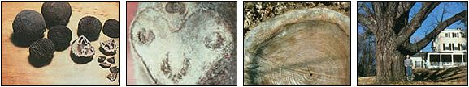

Plant Black Walnuts
You and your family can grow your own shade, nut crops, and valuable timber if you start planting black walnut saplings this year..
By Mark Mikolas
March/April 1981
I'm an avowed lover of wood, and am generally a whole lot more interested in working with the material than in burning it. So, when a proud friend escorted me to his basement and began explaining the maze of ducts on his new furnace conversion, I observed - with some horror - his ceiling-high pile of black walnut logs. Every piece was a foot and a half long with grain straight enough to make arrows!
At that point, almost the only thing I knew about walnut was that the local hobby supply outlet wanted seven bucks for a little carvin' flitch . . . at any rate, I was pretty sure that there were better ways of using the expensive wood than simply making fuel of it.
Shortly after that experience, I heard about a black walnut tree in my area - the mid-Hudson Valley in New York state - that had been bought for $11,000! Well, my idle curiosity exploded into fanatical interest upon receiving that little piece of news! I wasted no time in getting out my tree identification books, locating and talking to hardwood buyers, and visiting both state and private foresters. Soon I was hiking every inch of woods on my property ... looking for the deer-faced bud scars and twigs with chambered pith that identify the "golden" trees (while visions of five-figure cashier's checks danced in my naive head).
That was a year ago. I'm still poor, but I'm no longer naive ... and I've learned that there are some very real long-term rewards awaiting folks with enough foresight to plant and tend their own black walnut groves. And - although I've never found one - there's even a long-shot chance that you have a prize tree in your woodlot or dooryard right now . . . a specimen that could be sold for enough money to raise a new barn!
WHAT'S SO SPECIAL ABOUT IT?
Black walnut ( Juglans nigra ) has been among the most desirable hardwoods - particularly for furniture- and cabinetmaking - ever since it was discovered in virgin stands on North America's shores over three centuries ago. It has a deep, unique, lustrous color and is dimensionally stable. It resists checking (that is, splitting ... either as it dries or as the result of changes in humidity). The heartwood (from the center of the tree) seldom decays. And walnut is actually stronger than white oak!
Over the course of American history, our supplies of black walnut have dwindled drastically. As the virgin stands were felled, the lumber that wasn't exported or used by colonial cabinetmakers went into fencing and barn siding.
Then, during the Civil War, the properties of this handsome wood made it the choice material for use in gunstocks . . . and the trees have continued to fall right and left ever since. In fact, so scarce did top-grade black walnut lumber become that, during World War II, the U.S. government instituted programs to encourage people to donate their dooryard nut-bearers to the military effort! (Even today, if you want to carve your own walnut gunstock, you may find that a nicely grained blank can cost $300 or more!)
In response to the continually shrinking supplies of Juglans, a few concerted efforts were made in the 1930's and 40's to plant stands of the regal trees. But cutting continued to outpace planting: In the 60's walnut was still scarce and prices were still rising. As a result, there was a renewed effort on the part of the U.S. Forest Service to develop ways to grow the valuable trees rapidly ... and - as such experiments began to pay off - private landowners were urged to start "walnut plantations".
Now you may be surprised to know that it costs very little to establish a stand of black walnuts today. In fact, it can often be done for nothing! Of course, neither you nor I may be around to cash in on our efforts when the trees planted today become marketable after 40 or 60 years, but consider: If your land is still in the family when the walnuts attain a salable size, the trees will constitute a grubstake for your children and grandchildren ... and such an investment sure beats the value (and cost!) of life insurance policies.
In the meantime, the stand of stately hardwoods will provide beauty, shade, and walnuts for decades to come. (And who can put a cash value on a future of sunny days spent sitting on the porch, eating homemade black walnut ice cream and spice cake?)
WHERE TO PLANT
If you're interested in starting a walnut grove, find out first whether the stately trees are native to your area. Most of them grow east of the Mississippi, with prime commercial stands located in Illinois, Indiana, Missouri, and Iowa. The hardwoods do well in California, too. If you haven't been able to spot a specimen, your local forester can tell you whether there are any in your region of the country.
Next, be aware that Juglans nigra is one of the most site-sensitive of hardwoods, so - if you want the trees to grow up straight and strong - you've got to be particular about where you start your future forest. In smooth, rolling countryside the specific location isn't as important as are soil conditions. However, if your region is made up of strongly rolling terrain, or is actually mountainous, the areas to select (for further soil testing) are lower north-facing slopes, stream terraces, and flood plains. Avoid steep hillsides, south faces, and ridge tops.
The earth at your chosen planting site should be high-grade topsoil with good loam, and a near-neutral pH of 6.0 to 6.5. The subsoil should be the same, but a little clay won't matter. Good drainage is important, though, and the only way to be sure your location can provide it is to dig right down to a depth of at least 48 inches. If you hit gravel less than 40 inches down, you're on a spot where walnut trees will grow twice as slowly as will those whose roots can go 40 inches or more into unobstructed soil. Worse yet, if you hit rock or hard clay, or if the soil is mottled (spots or blotches of different colors indicate that it doesn't drain well), look elsewhere.
Walnuts are also particular about their neighbors. The trees' roots produce a toxic substance known as juglone, which adversely affects a number of plants . . . including pines, potatoes, tomatoes, blackberries, alfalfa, and apples. So if your chosen planting site is in an evergreen clearing, along a fence row, or next to a garden . . . you'll have to make a difficult either/or decision.
WHAT TO PLANT
Black walnut trees can be raised from nuts or from year-old seedlings. Most folks should be able to find free nuts and - by doing so - will have the advantage of knowing the quality of the tree they came from and where it grew. But germination of walnut seeds is uncertain, and squirrels love 'em enough to travel miles, and dig deep, in single-minded pursuit of the tasty morsels.
If you buy seedlings, on the other hand, you can select the best stock and be certain of planting a live tree at each site. (Of course, this method will cost money, but there'll be some satisfaction in having outwitted your local squirrels!) .
However, the question of whether to start your trees from seeds or seedlings is less important than are the location and genetics of the parent stock. Your trees' "ancestors" should be standing no more than 100 miles south of your planting location, or the new growth may have a hard time resisting frosts.
If you go out to collect nuts, find a healthy tree with a straight trunk and vigorous crown. Local foresters or hardwood buyers may be able to lead you to ideal specimens that are too young for cutting, or to prime trees whose owner has been reluctant to sell. Gather nuts as soon as they start to fall. Open a few (wear rubber gloves when husking them to avoid dyeing your fingers brown!) to make sure the nutmeats are in good condition ... not dried or shriveled. Gather three nuts for each tree you want to plant.
If you decide to set out seedlings, check the nurseries in your area and contact your nearest forestry office (some state forestry departments offer seedlings at nominal prices). Once you've located a source, make sure that the young trees come from seedlots where weather conditions and spring frost dates approximate those of your growing site.
Order the little saplings in the fall (you probably won't be the only person in your area who's thinking of planting walnut, so get a head start). And if you have a choice, go for the biggest and healthiest seedlings available. Measure them at points one inch above the root collars . . . they should be a quarter-inch or more in diameter. A baby black that's even 1/16 inch less than that minimum size can take years more to grow to marketable dimensions.
SITE PREPARATION
These wonderful nut-bearers don't appreciate competition! Your new tree - whether it was planted as a seedling or has sprung from a nut - is going to have a hard time fighting for sunshine and nourishment if it's surrounded by fast-growing weeds. You'll need to mulch or cultivate to keep unwanted plants under control.
If your plot's vegetation is thick, cut and remove it in the fall, and plow or disk the area. Then, if you're planting seedlings in the spring, disk the site again beforehand, just as you would a garden. (You're going to have to keep the weeds down after your trees are in, too!)
PLANTING THEM
To start your woodlot from seed, you'll first have to husk the nuts. Some people drive back and forth over them with their cars. A corn huller will also do the job. And I know of one old-timer who husks walnuts by setting a board with a 1-1/2" opening over a bucket and forcing each nut through the wood's "hulling hole".
Because nuts must endure a cold period and be kept moist if they're to germinate when warm weather comes, it's best to plant them in the fall ... and let Old Man Winter take care of the rest.
If the nuts are allowed to dry, they'll keep almost indefinitely for eating purposes . . . but will never germinate. You'll need to pick them up off the ground and plant them in the ground without letting them dry out. (The average germination rate of fresh wild walnuts is about 30 to 50%. So, by starting three nuts at each site, you'll probably get at least one seedling per spot.)
To plant the nuts, first loosen the soil to a depth of about a foot, and then place the seeds two to three inches below the soil surface. Cover them and step on the earth to firm it. Put a foot of mulch - hay is fine - over the planting sites before winter hits, and then remove it in the spring.
Don't forget that squirrels have been known to dig up entire black walnut planting sites. You can outwit the pesky devils by placing an 18-inch square of heavy wire mesh over each buried cluster of seeds ... or by simply burning the coating off No. 2 tin cans, and using the cleansed seed "collars" to protect your walnuts (leave sharp points on the cans' lids and remove the bottoms). And don't fertilize your newly planted crop. By doing so, you'd feed the weeds, which would probably crowd out your young trees.
If you've elected to start your forest from seedlings, you won't have to worry about germination or squirrels. Plan to get your tree tots in the ground by the end of May (in the North) or the end of April (in the South). A late frost can kill the terminal buds and deform your tree . . . so you'll be better off being late than early.
Saplings may be sold with the roots pruned back to 12 inches . . . or the main tap may be uncut and thus a lot longer. The length of the root will tell you how deep to dig your hole. Use either an auger or a posthole digger for the chore, and set your seedlings in deep enough to assure that the root collar is below the ground. Finally, fill in the hole slowly . . . packing the soil a few inches at a time.
SPACING YOUR TREES
Each of your "young'uns" will need 100 to 150 square feet of growing room. This means you can plant on 10' X 10' or 12' X 12' grids. Even though a random stand may simulate nature, it can result in fierce crown competition (which is capable of slowing growth by 50%) and make proper thinning difficult. Also, if you're planning to disk or till to keep down weeds, planting in rows will make the task a whole lot easier.
Should you plan to monocrop black walnuts, you'll want to plant on the small grid system. However, you should at least consider intercropping. When doubling up the hardwoods with another crop, it's best to plant seedlings - so you won't have to worry about germination - on a 35' X 35' or 40' X 40' grid. Then, once the trees are a few years old, you can sow orchard grass, bluegrass, hay, fescue, or red clover between the rows. Cattle can even be grazed right in your woodlot, once the trees become too large to be browsed or trampled.
COMPETITION CONTROL
For the first three years of your trees' lives, they ought to have the soil all to themselves. Even when intercropped, the hay or grass must be controlled in a three- or four-foot circle around each young tree.
If you don't want to use chemical weed controls, you can continue to rototill periodically throughout the three growing seasons, but such a program does involve a lot of labor. Black plastic mulch is probably the best all-around nontoxic solution. Cut each piece about three feet square, and make a small slit in the center for your seedling and a few small holes to let rainwater (but not the sun) in. (If you planted nuts, simply put the plastic down as soon as shoots appear.)
PRUNING AND THINNING
Your major concern, in the early life of your trees, is that they grow straight and don't fork. So pack up some tape and a pair of sharp pruning shears, and set out to examine your one-year-olds sometime between May and July when it's clear what direction the new growth is taking. If the terminal shoot (the one on top that's supposed to point straight up) is at an angle, prune it back. A new shoot will then begin at the first bud behind this cut, and that growth ought to shoot straight up. In a few years the slight crook produced by this method of surgery will disappear naturally.
If the tree is forking, tie the bases of the two branches together with tape or cloth, and then prune the tip of the weaker shoot back to the point at which it's tied to the stronger fork.
In cases where the terminal shoot has been frost-killed (or nibbled by a hungry woodchuck or deer), select one of the main shoots from around it as your new tree top and prune away the rest. (Be sure you make all cuts clean and flush to the stem. Otherwise, they won't heal . . . and heartrot may kill the saplings.)
To achieve maximum value for your efforts, your trees must be of veneer quality (such walnuts can command prices of $2.00 to $8.00 per board foot). And the only part that can be used to produce veneer (super-thin sheets of wood "peeled" from a log and used to cover lesser-grade lumber products) is the main bole (the trunk). A tree whose trunk rises 16 feet to the first branch will be twice as valuable as one with a branch at eight feet. The $11,000 hardwood I mentioned earlier was 30 inches in diameter at breast height (DBH) and towered 26 feet to the first branch!
After three years you should have a stand of nice straight trees, each an inch or more in diameter and eight to ten feet tall. At that point you can begin clear-stem pruning ... that is, cutting away superfluous lateral branches to produce knot-free trunks. The trees must have vigorous crowns to put on girth rapidly, so remove only the side growth sprouting from the lower half of each tree. In other words, if your saplings are ten feet high, you should cut off all branches below the five-foot level. Prune them flush ... then, a few weeks later, go back and remove any new shoots or suckers that have started around the cut area.
Every three to five years, repeat the procedure of pruning away any branches on the lower half of each of your trees. All branches to be excised should be cut before they are an inch in diameter . . . to prevent knots from forming In the wood.
[EDITOR'S NOTE: Stem form can also be enhanced if you plant autumn-olive ( Elaeagnus umbellate ) between the walnuts: The shrub's bushy shape will crowd out low branches and partially substitute for lateral pruning. In addition, autumn-olive - being a leguminous plant - will fix atmospheric nitrogen and add it to the soil in a form available to the black walnuts . . . and its bright red berries will provide an excellent food for song and game birds.]
You won't have to worry about thinning for eight or ten years. However, after that amount of time has passed, your trees (if they were planted ten feet apart) will start crowding each other . . . and their growth rate can slow by 50%.
Of course, you'll want to remove first any deformed, crooked, diseased, and runty specimens . . . and to select the "sacrifices" in such a way that the crowns of the remaining trees will be able to expand uninhibited.
If you were ambitious and planted a full acre on ten-foot centers, you will have set out 400-plus black walnuts. By maturity, there will be room for a maximum of only 50 trees. So don't be shy about thinning! When the leafy unbrellas start to touch on more than one side of a tree, it'll be time to sharpen your axe. Chances are you'll need to repeat the selection process every five to ten years in the first half of the stand's life.
NUTS
It's only in the largest of walnut plantations that the nuts figure into the economic picture. However, you'll probably want to collect and eat your own crop . . . and pass some along as seed.
Walnut trees (they are hermaphrodites) should begin to bear within six to ten years after planting. Once nuts start falling, the quantity will usually rise rapidly after the first year. However, the "rule" is often bent and broken: Some years you may get hardly any crop, and some trees may bear only every other year.
If you dry the nuts in a cool place, they should keep indefinitely. Their strong flavor and extremely high protein level (up to 20 times that of milk!) make them a favorite in the kitchen. With time and plenty of trees, you may even be able to gather enough nuts to sell, in a roadside operation or to a local bakery. As a result of our society's indiscriminate use of herbicides - and because so many walnut trees have toppled to the woodcutter's axe - North American nut production decreased 40% between 1963 and 1973! So 25 years from now, when your trees are dropping bushels of walnuts, the yearly crop may amount to a lot more than pennies from heaven.
That's about all there is to the project. If you like to make things grow - and if you aren't saddled with a need for instant gratification - consider farming a stand of black walnuts. With a little care and attention, they'll be adding rings of solid value for you with each year. And in the meantime, you can be sitting in their dappled shade and sampling their nutty fare!
 Photos by the Author LEFT: Fred Gerty, a New York state forester, inspects a healthy 11-year-old black walnut. RIGHT: Immature walnuts are well-formed by midsummer. |
 Photos by the Author FROM LEFT: Dried, hulled, and cracked nut (with nutmeats). . . . Both black walnut and butternut trees have ""deer-faced"" leaf scars on twigs. . . . The dark wood in the center of this felled black walnut is the heartwood that loggers covet. . . . This monumental specimen stands 103' high, is 18' 16"" in circumference, and was planted ? in Rhinebeck, New York ? by Alexander Hamilton! |
|